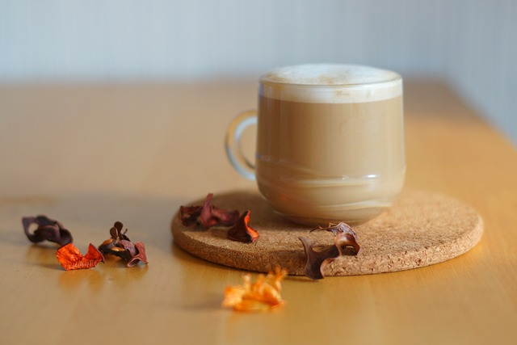

The Leaky Cauldron
Famous Wizzard Recipes

The Best ButterBeer
Serve in cold bottles or hot foaming tankards!
Servings
4
Difficulty
Intermediate
Cost
$$
Ingredients
- 1L of cold cream soda
- 1/4 tsp of caramel extract
- 1 tsp vanilla extract
- 1 tsp of melted unsalted butter
- 1/4 cup of butterscotch syrup
- 1 cup of heavy whipping cream
- 1 tbsp of powdered sugar
Steps
- In a large mixing bowl, whipped heavy cream until stiff.
- Add butterscotch syrup and powdered sugar and mix gently until homogenous.
- Mix the cream soda, caramel extract, vanilla extract and melted unsalted butter together.
- Pour in mugs or tankards.
- Add butterscotch cream topping.
Back to top